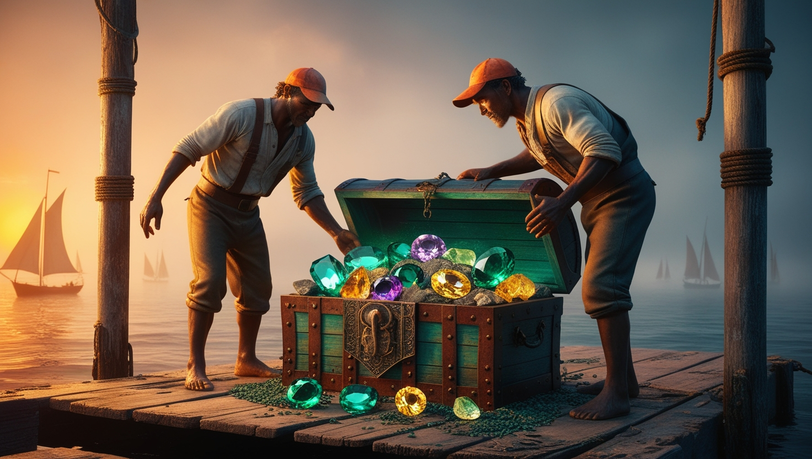
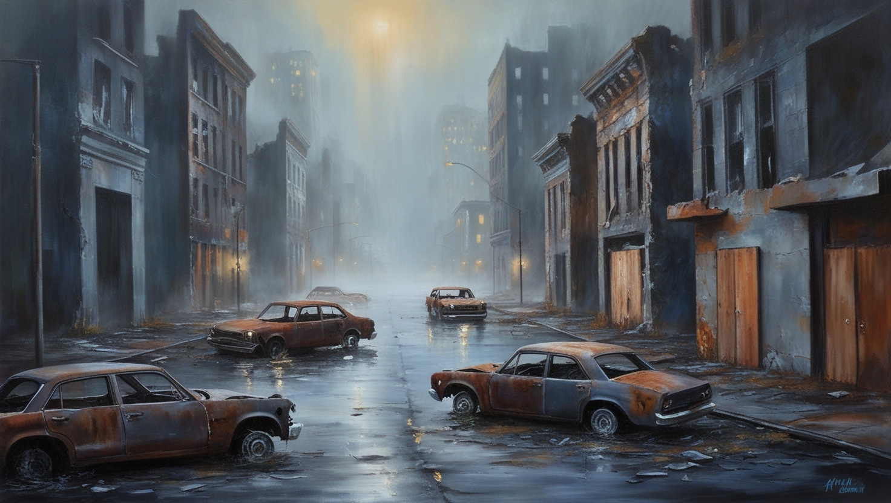
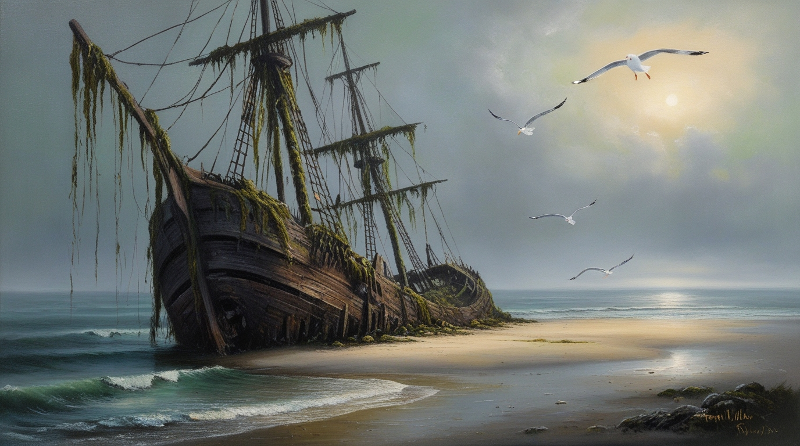

Zgodba
Vse se je začelo z nenavadnim pojavom na obali Vespucci Beach. Ribiči so na obali našli starodavno skrinjo, napolnjeno z nenavadnimi, svetlikajočimi se kamni. Kmalu so opazili, da se tisti, ki so se dotaknili kamnov, začnejo čudno obnašati.
Medtem ko so domačini pripovedovali zgodbe o prekletih zakladih, je bil radovedni turist, Marjan, prvi, ki je prinesel enega od kamnov v mesto. Marjan je bil znan po tem, da je imel rad nenavadne in starodavne predmete, vendar ni vedel, kaj je sprožil s tem dejanjem. Ko se je kamen pojavil v mestu, so se začele dogajati čudne stvari. Najprej so se ljudje, ki so bili v bližini kamna, začeli pritoževati nad glavoboli in slabostjo. Vendar je najhuje prišlo šele kasneje. Po nekaj dneh so se tisti, ki so se dotaknili kamna, začeli spreminjati. Njihova koža je postala bleda in razpokana, oči so postale temne in brez življenja. Najbolj strašljivo pa je bilo, da so izgubili vse znake človečnosti in postali nasilni proti drugim ljudem. Zaradi neznanega izvora okužbe so se oblasti v Los Santosu sprva trudile obvladati situacijo. Policija in reševalci so poskušali omejiti okužene in jih izolirati, vendar je bilo prepozno. Zombiji so se širili hitreje, kot je kdorkoli pričakoval. Vsak ugriz je pomenil novega zombija in tako se je okužba širila kot požar.
Kot da napad zombijev ni bil dovolj, se je pojavil še en čuden pojav! Po več kot 300 letih se je znova pokazal tako imenovan "Potopljen Otok" in s sabo prinesel veliko starih artefaktov, prav tako pa je dvignil potopljenje ladje in letala, ki so se v času, ko je bil otok še pod vodo, potopila. Kaj skriva na sebi? Ali je povezan z nenavadnimi pojavi? To so vprašanja, ki se med preživelimi pojavljajo in jim ne dajo mira.
